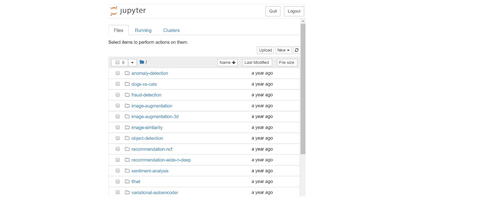
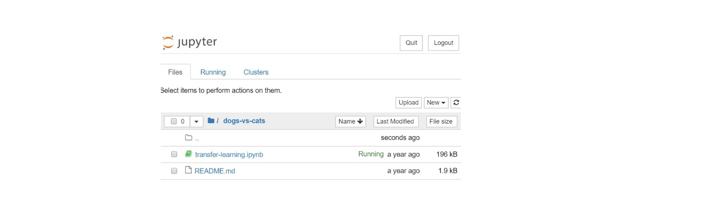
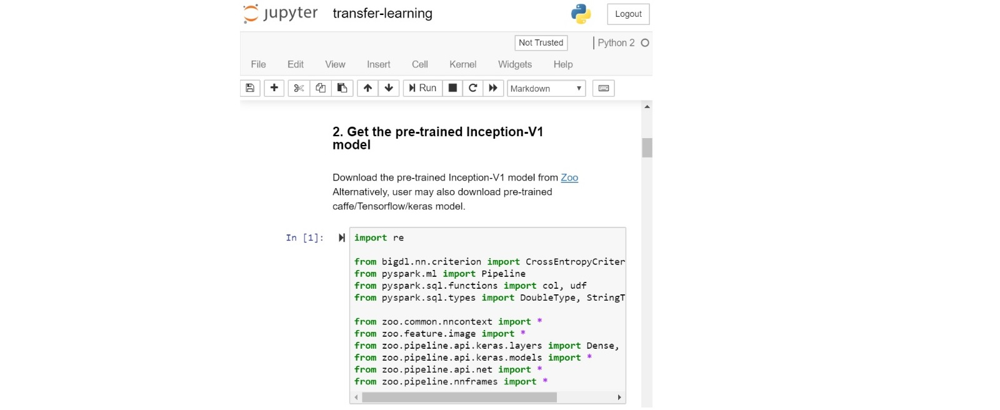
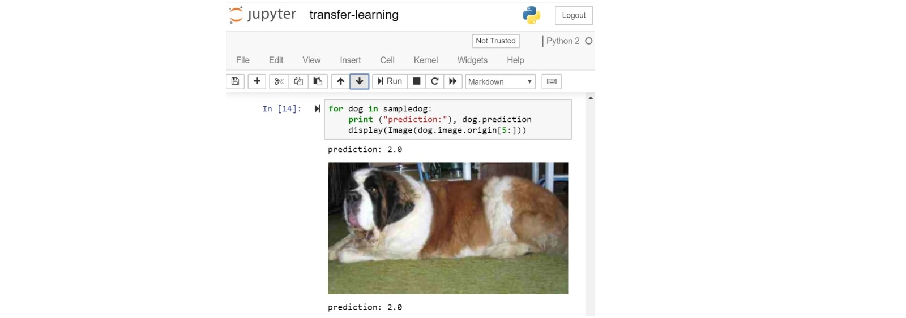

Docker User Guide¶
1. Pull Docker Image¶
You may pull a Docker image from the Analytics Zoo Docker Hub.
To pull the nightly build version, use
sudo docker pull intelanalytics/analytics-zoo:latest
To pull other versions, please refer to Analytics Zoo Docker Hub Tags, select a tag and use
sudo docker pull intelanalytics/analytics-zoo:tag_name
Configuring resources
For Docker Desktop users, the default resources (2 CPUs and 2GB memory) are relatively small, and you may want to change them to larger values (8GB memory and 4 CPUs should be a good estimate for most examples, and the exact memory requirements vary for different applications). For more information, view the Docker documentation for MacOS and Windows.
Speed up pulling image by adding mirrors
To speed up pulling the image from DockerHub, you may add the registry-mirrors key and value by editing daemon.json (located in /etc/docker/ folder on Linux):
{
"registry-mirrors": ["https://<my-docker-mirror-host>"]
}
For instance, users in China may add the USTC mirror as follows:
{
"registry-mirrors": ["https://docker.mirrors.ustc.edu.cn"]
}
After that, flush changes and restart docker：
sudo systemctl daemon-reload
sudo systemctl restart docker
2. Launch Docker Container¶
After pulling the Analytics Zoo Docker image, you can launch an Analytics Zoo Docker container:
sudo docker run -it --rm --net=host \
-e NotebookPort=12345 \
-e NotebookToken="your-token" \
-e http_proxy=http://your-proxy-host:your-proxy-port \
-e https_proxy=https://your-proxy-host:your-proxy-port \
intelanalytics/analytics-zoo:latest bash
- The value 12345 is a user specified port number.
- The value “your-token” is a user specified string.
- If you need to use http/https proxy, please use -e http_proxy/https_proxy
Once the container is successfully launched, you will automatically login into the container and see this as the output:
root@[hostname]:/opt/work#
The /opt/work directory contains:
- download-analytics-zoo.sh is used for downloading Analytics-Zoo distributions.
- start-notebook.sh is used for starting the jupyter notebook. You can specify the environment settings and spark settings to start a specified jupyter notebook.
- analytics-Zoo-${ANALYTICS_ZOO_VERSION} is the Analytics-Zoo home of Analytics-Zoo distribution.
- analytics-zoo-SPARK_x.x-x.x.x-dist.zip is the zip file of Analytics-Zoo distribution.
- spark-${SPARK_VERSION} is the Spark home.
- analytics-zoo is cloned from https://github.com/intel-analytics/analytics-zoo, contains apps, examples using analytics-zoo.
3. Run Jupyter Notebook Examples in the Container¶
After a Docker container is launched and user login into the container, you can start the Jupyter Notebook service inside the container.
3.1 Start the Jupyter Notebook services¶
In the /opt/work directory, run this command line to start the Jupyter Notebook service:
./start-notebook.sh
You will see the output message like below. This means the Jupyter Notebook service has started successfully within the container.
[I 01:04:45.625 NotebookApp] Serving notebooks from local directory: /opt/work/analytics-zoo-0.5.0-SNAPSHOT/apps
[I 01:04:45.625 NotebookApp] The Jupyter Notebook is running at:
[I 01:04:45.625 NotebookApp] http://(the-host-name or 127.0.0.1):12345/?token=...
[I 01:04:45.625 NotebookApp] Use Control-C to stop this server and shut down all kernels (twice to skip confirmation).
3.2 Connect to Jupyter Notebook service from a browser¶
After the Jupyter Notebook service is successfully started, you can connect to the Jupyter Notebook service from a browser.
- Get the IP address of the container
- Launch a browser, and connect to the Jupyter Notebook service with the URL: https://container-ip-address:port-number/?token=your-token As a result, you will see the Jupyter Notebook like this:

3.3 Run Analytics Zoo Jupyter Notebooks¶
After connecting to the Jupyter Notebook in the browser, you can run multiple Analytics Zoo Jupyter Notebook examples. The example shown below is the “dogs-vs-cats”.
- Click into the “dogs-vs-cats” folder:

- Open the notebook file:

- Start to run the “dogs-vs-cats” notebook:

- Run through the example and check the prediction:

4. Shut Down Docker Container¶
You should shut down the Analytics Zoo Docker container after using it.
- You can list all the active Docker containers by command line:
sudo docker ps
- You will see your docker containers:
CONTAINER ID IMAGE COMMAND CREATED STATUS PORTS NAMES
40de2cdad025 intelanalytics/analytics-zoo:latest "/opt/work/start-n..." 3 hours ago Up 3 hours upbeat_al
- Shut down the corresponding docker container by its ID:
$sudo docker rm -f 40de2cdad025